Character · Van der Linde gang
Sean MacGuire
Sean MacGuire is a young Irish thief and stick-up man in the Van der Linde gang, a supporting character of Red Dead Redemption 2 (2018), set in 1899. Separated from the gang after the failed ferry robbery in Blackwater, he is captured by bounty hunters and freed by Arthur Morgan, Charles Smith and Javier Escuella in the second chapter. He then joins the train job of John Marston and burns the Gray family's tobacco fields with Arthur. In the third chapter he is shot dead by a sniper in Rhodes, in an ambush set by the Grays. He is also a mission giver in Red Dead Online.
He is played by Michael Mellamphy, an actor from County Cork based in New York, who replaced the first actor cast in the role during production.
- Name
- Sean MacGuire (also written Macguire)
- Born
- Ireland; year not given in the game. In camp he speaks of an old neighbor in Donegal
- Died
- 1899, Rhodes, shot by a sniper in the Gray family ambush of "A Short Walk in a Pretty Town"
- Status
- Deceased; buried by Bill, his grave lies just north of Clemens Point
- Nationality
- Irish
- Family
- His father, a wanted man, fled with him to America and was killed by the British (official guide); a newspaper scrap in camp names a Fenian, Darragh Macguire, whom the Red Dead Wiki identifies as his father
- Affiliation
- Van der Linde gang
- Role
- Thief and stick-up man
- Games
- Red Dead Redemption 2, Red Dead Online
- Voiced by
- Michael Mellamphy (voice and motion capture)
Biography
Origins
The games give no birth date for Sean. He is Irish, and in "The Fine Joys of Tobacco" he tells the Gray guard Hamish that he comes from Donegal, according to the Red Dead Wiki. The Red Dead Wiki identifies his father as Darragh MacGuire, a Fenian, that is, a member of the armed movement for Irish independence. The name itself comes from a clipping from a London paper, the Imperialist of London, dated June 1889, which can be read on a barrel in the Clemens Point camp and does not mention a son. It spells the name "Macguire" and says that Darragh took part in an uprising in Galway in 1860, in which three large properties were burned, then in a Fenian raid near Niagara Falls, in Canada, that left eight people dead. Back in Ireland, he became a known figure of republican politics while wanted for murder.
The same article says that British government agents tracked Darragh to a farmhouse near Clifden, in Connemara, that he escaped them and fled to the United States, and that they found him in a rooming house in Boston, Massachusetts. The paper says he died there in a gunfight with the agents. It also reports that members of his family said he had been murdered in his sleep, and adds that other witnesses denied this, calling it Fenian propaganda. The official guide to Red Dead Redemption 2 gives its own short account, without naming the father: a wanted man, he fled with Sean to America, and the British pursued them and killed him in his bed. The Red Dead Wiki adds, without a source, that Sean was sent to a reform school as a boy, to little effect.
According to the same guide, Sean joined the gang after failing to steal Dutch van der Linde's pocket watch in an alleyway. The Red Dead Wiki gives a fuller version: some time before 1898, in a bar in North Elizabeth, he noticed the watch, followed Dutch and Hosea Matthews into a dark alley and held them at gunpoint. Dutch and Hosea only laughed and told him to shoot. He pulled the trigger, but the gun was empty: they had seen him coming and unloaded it without his noticing. They gave him a meal and a place in the gang. In 1899 he takes part in the Blackwater ferry robbery. When it goes wrong, he is knocked out as soon as the shooting starts, as he later tells Lenny Summers at the campfire, and he is left behind when the others flee.
Red Dead Redemption 2 (1899)
Chapter 1: Colter
Sean does not appear in the first chapter. While the gang shelters in the snow at Colter, nobody knows what has become of him. In "Outlaws from the West", Dutch names him with Davey, Jenny Kirk and Mac Callander among those the gang has lost, adding that some may still be alive; when Micah Bell asks about Mac and Sean, Dutch answers that they do not know. In "Enter, Pursued by a Memory", Javier Escuella tells Arthur Morgan that they have no idea what happened to Sean. After the raid on the O'Driscoll camp in "Old Friends", Dutch says he is certain that John, Mac, Charles and Sean will all be back. In the meantime, according to the Red Dead Wiki, bounty hunters led by Ike Skelding have captured Sean and questioned him about the gang, and he has told them nothing.
Chapter 2: Horseshoe Overlook
The gang settles at Horseshoe Overlook, above Valentine. In "Americans at Rest", after Arthur's saloon brawl in Valentine, Josiah Trelawny brings the news: Sean is alive, held in Blackwater by bounty hunters who want to see how much the government will pay for him, and there is talk of moving him. Dutch sends Charles Smith, Javier and Trelawny to look into it. If Arthur raises the subject with Hosea during "Exit, Pursued by a Bruised Ego" before the rescue, he says he must go back to the Great Plains to see about Sean; Hosea warns that it is dangerous to go near Blackwater, and Arthur answers that they have to try if Sean is alive.
"The First Shall Be Last" opens on a cliff above Blackwater, where Charles and Javier are watching the town, full of Pinkertons and bounty hunters. Arthur wonders aloud why Sean has not been hanged, and Charles guesses that he is being used as bait or kept for a public trial. Trelawny arrives and reports that Ike Skelding's men are taking Sean up the Upper Montana River to one of their camps, before handing him over for a federal prison in the West. Arthur says they either rescue him now or cut him loose; Charles refuses the second option. Arthur sends Charles along the north side of the valley and rides with Javier and Trelawny along the cliffs, following the boat. Through binoculars they watch the bounty hunters pull Sean off the boat with a sack over his head, kick him to the ground and drag him up a canyon.
At the river, Trelawny distracts two guards by pretending that his wife is gravely ill and then faking a fit, while Arthur and Javier kill them silently with their knives. Trelawny leaves, and Arthur and Javier fight their way up the canyon, covered by Charles from the cliff. The three men then storm the bounty hunters' camp, where Sean hangs upside down by his legs from a tree, calling out to them during the fight. Arthur cuts or shoots the rope. When Sean asks for a hug, Arthur tells him that nothing matters more to him than the gang, but that he would have left Sean to rot if Charles had not stopped him; Sean says he does not believe a word of it. Javier escorts Sean back to camp, Charles rides separately, and Arthur stays behind to search the camp. That night the gang throws a party for Sean's return, during which he goes off with Karen Jones (see Relationships).
At the start of "Pouring Forth Oil IV", Arthur finds Sean near the oil wagon stolen for the train job, missing bottle after bottle with his revolver; Arthur hits one on the draw. Sean then complains that Arthur never takes him on jobs and asks to come on the raid that Arthur and John Marston have planned. Arthur says he wants calm and that taking Sean would be like bringing Micah; Sean threatens him if he makes the comparison again. If Arthur arrives before dark, Sean accuses him of feeling threatened by his youth, and the two rest until nightfall. When John and Charles arrive, John reminds Sean that he was not invited; Sean replies that Arthur says he is coming, and climbs onto the wagon.
On the drive, Sean mocks John for having had his feet up, playing sick and fondling his new scar, while the others worked (his banter on the wagon is quoted under Personality). Arthur gives him the baggage car. The wagon is parked across the tracks at the state line between New Hanover and Lemoyne, and the train stops. Sean knocks out a guard at the front, then walks down the train while Arthur and John rob the passengers. When Arthur joins him, Sean has found the baggage car but has not opened it. A guard bursts out and strikes him on the head, and Arthur shoots the guards. Dazed and seeing double, Sean keeps watch while Arthur loots the car; when Sean complains of the lump on his head, Arthur tells him that at least he has no hole in it.
Sean is the first to spot two lawmen riding out of the trees. More follow, and the four men shoot their way out, then escape on horseback; Sean whistles for his horse, Ennis. Once they are clear, Arthur throws each man his share, and Sean counts about a hundred dollars. John asks whether the law turned up too fast to be a coincidence, and Arthur says he does not know. They split up to ride back to camp separately. At the end of the chapter, after "A Strange Kindness", the gang leaves Horseshoe Overlook for a new camp at Clemens Point, on Flat Iron Lake in Lemoyne, and Sean moves south with the others.
Chapter 3: Clemens Point
Near Rhodes, Dutch and Hosea try to play the Gray and Braithwaite families against each other. In "The Fine Joys of Tobacco", given by Hosea, Arthur finds Sean playing cribbage at Braithwaite Manor with Hosea and Catherine Braithwaite, while one of her sons (Bartholomew, according to the Red Dead Wiki) looks on. Catherine hires them to burn the Grays' tobacco fields at Caliga Hall with a wagon of moonshine, and Sean leaves with Arthur, who refuses to let him drive. On the way, Arthur remarks how quiet he was at the manor; Sean admits it was hard and says what he thinks of Catherine and Bartholomew, and Arthur laughs. When Sean realizes that the Grays know Arthur's face, Arthur hides in the back of the wagon and hands him the reins.
At the gate, Sean presents himself as a new delivery boy. A guard, Hamish, climbs aboard to show him the way to the warehouse; on the ride the two chat, Hamish talks about his Scottish roots, and Sean offers him a drink of moonshine. In the warehouse, Sean keeps him talking so that Arthur can take him from behind. Depending on the player, Hamish is killed silently by Arthur or by Sean, or Arthur knocks him out with the butt of his pistol. The two men close the doors and wait for dark. At night they hide from a newly arrived wagon carrying payroll. Arthur soaks the fields with moonshine while Sean takes care of the sheds and the barn, then Arthur throws the first fire bottle. The Grays open fire, the horses Sean has spotted for the escape bolt, and the two men cross the burning fields to the payroll wagon. Arthur unhitches its horses while Sean finds the money, and they ride off, shooting their pursuers. Arthur can then ride back to camp with Sean or stay behind.
During the same chapter Sean offers Arthur two jobs. In "Social Calls With Mr. MacGuire", he has heard that drunk train robbers are using Lonnie's Shack, in Scarlett Meadows, as a hideout; according to the character page of the Red Dead Wiki, the tip came from a hunter whom Sean then robbed. At the shack, Sean warns the man standing outside that lawmen are coming, then shoots him while he is distracted. The two kill the gang inside, keep one alive to learn that the money is behind a bedroom wall, and split the take; Arthur can spare or kill the last man. In the "Coach Robbery" he plans, Sean brings along Mary-Beth Gaskill, over Arthur's objections. Near Face Rock, Mary-Beth stops a Boles Overland banking coach by pretending to have lost her memory, and Sean and Arthur shoot the escort with rifles. The coach yields 305 dollars, of which Arthur keeps 55.
After the burning of their fields, the Grays offer the gang security work, and Bill Williamson sets up a meeting in Rhodes. Dutch, or Trelawny once "Friends in Very Low Places" is done, tells Arthur to join Bill, Sean and Micah there. In "A Short Walk in a Pretty Town", the four men walk down the main street of Rhodes, which is strangely empty. Arthur and Sean both feel that something is wrong. As Sean starts to say that he could have told them so, a sniper hired by the Grays shoots him in the head, and he dies on the spot. Bill is shot in the shoulder. Sheriff Leigh Gray captures Bill during the gunfight, Arthur and Micah fight their way through the gunsmith's, and Arthur kills the sheriff in front of his office as he holds a gun to Bill's head.
After the fight, Arthur blames Bill and Micah for walking the group into the trap, says how fond he was of Sean and asks Bill to give him a proper burial. On the ride back to camp he tells Micah that the two of them had better not speak to each other for a while, according to the mission page. Sean's grave can later be found a short distance north of the Clemens Point camp. In Arthur's journal, with high honor, he writes that Sean was like an annoying little brother and remembers their rides together; with low honor, according to the mission page, he notes only that Sean was killed in an ambush and that there is still no sign of the Confederate gold. The journal also holds a sketch of Sean's body. In "The Battle of Shady Belle", on the ride to the new camp, John blames Dutch and Hosea's games with the two families, says that Jack is gone and lists Sean with Mac, Davey and Jenny among those the gang has lost. At the end of the mission, Dutch tells Arthur that the feud between the two families and the loss of Sean have changed the way he sees things.
Personality
Rockstar's character description, published on September 6, 2018, reads: "A cocky young Irish thief and stick-up man who comes from a long line of criminals and political dissidents. He always wants a piece of the action and believes in himself...perhaps a little too much." A character page from an official guide, reproduced on the Red Dead Wiki, opens with the same portrait and ends: "Sean likes to push people's buttons, always wants a piece of the action, and certainly believes in himself... perhaps a little too much." Between the two, the guide page summarizes his past: a father on the run, the flight to America and the failed attempt on Dutch's pocket watch (see Origins).
In camp and on jobs, Sean talks constantly, teases older members and hands out nicknames (see Names and Relationships). He insists on joining jobs he is not invited to, as in "Pouring Forth Oil IV", and complains when Arthur works with others instead of him. He brings his father into conversation so often that, on the way to the train, John cuts him off with "Not the da, please!" and Charles and Arthur join in. According to the Red Dead Wiki, he says "fuck" more than any other member of the gang. He cannot read, and keeps putting off Lenny's lessons (see Lenny Summers). Hosea catches him asleep on watch (see Hosea Matthews), and, if Arthur reaches the oil wagon before dark in "Pouring Forth Oil IV", he wakes Sean with a pebble and calls him a lazy sod.
The Red Dead Wiki's quote list gives his saying "Me da would say that no politics was politics." In camp he quotes another of his father's maxims to Javier (see Javier Escuella), and, according to the wiki, during his night with Karen he credits a move to "an old trick me Da taught me".
In his own words
The Red Dead Wiki opens its page on him with this line: "Just leave it to me. I can talk a dog off a meat wagon." Still hanging from the tree as the bounty hunters flee in "The First Shall Be Last", he calls out: "Takes an army of bounty hunters to bring in Sean Macguire." As he rides off with Javier, he adds: "I imagine you all missed me a lot... but fear not, the joy's back in your lives now." In "Pouring Forth Oil IV", missing bottle after bottle in front of Arthur, he answers: "I can scrap, Arthur. I'm just no good at home work."
Waiting for the train with Arthur, he explains that the older man feels threatened by his youth: "It's a story as old as the hills. The changing of the guard... the fading of the light. You're toast, old man." Asked what that makes him, he answers: "I'm the future, in all its glory!" On the wagon, when Charles asks why he has to talk so much, he replies: "'Cause I've still got some blood in me veins. You old bastards have forgotten how to live."
Names
His surname is written MacGuire in the wiki's transcript of "Pouring Forth Oil IV" and in the title of his Red Dead Wiki page, and Macguire in Rockstar's 2018 description, in the transcript of "The First Shall Be Last" and in the newspaper scrap about Darragh found in camp. Arthur calls him "Little Mr. MacGuire" when he hands out the tasks in "Pouring Forth Oil IV", and John calls him kid. Jack calls him Uncle Sean in a camp scene. The Red Dead Wiki also lists, all marked as unconfirmed, Dead Eye MacGuire, a name he would give himself, Irish Terrier, attributed to Dutch, and, on Jack's page, Jackie Boy, his name for Jack.
He hands out names as readily as he receives them. He calls Arthur English or Englishman, and King Arthur according to the Red Dead Wiki. On the way to the train he sums up his three companions as "Sulky, Angry, Scar Face", and the Red Dead Wiki reads Sulky as his name for Charles; he later answers John with "Aye, aye, Scar Face."
Appearance
The guide's portrait shows a slim young man with shoulder-length ginger hair and light stubble, in a green bowler hat, a worn gray-blue jacket over a cream undershirt and a red checked vest, with cuffed jeans. The Red Dead Wiki adds green eyes and a few missing upper teeth, and notes that this is his only outfit: with Cleet and Trelawny, he is one of three gang members without a winter outfit. When he is freed from the bounty hunters, he wears dark trousers held up by suspenders and a gray shirt.
Relationships

Arthur Morgan
Sean needles Arthur constantly: he calls him English or Englishman, and Arthur answers that his family were not even English. Arthur rescues him from the bounty hunters in "The First Shall Be Last", while telling him he would have left him there without Charles (see Biography). In "Pouring Forth Oil IV" their quarrel over the train job (see Biography) ends with Sean telling Arthur that he loves him. In a camp scene, after Karen slaps Sean, Arthur mocks his way with women; Sean answers that at least he gets some action, and Arthur says all he got was a slap.
In the Clemens Point chapter they rob Lonnie's Shack and a Boles Overland coach together and burn the Grays' tobacco. Arthur's reaction to Sean's death in Rhodes, and what he writes about him in his journal, are told in the Biography.

Karen Jones
In a camp scene behind John's tent, Sean asks Karen whether she missed him. She first claims she cried every night, then says angrily that she missed Davey, Mac and Jenny more than him; when he tries to hold her she slaps him and threatens to stab him if he touches her again, and he answers that he loves it when she talks nasty to him. At the party for his return, Sean flirts with her again and tells her he loves her; she answers that he only loves her when they are drunk. They go into John's tent together. According to the Red Dead Wiki, Karen cries during the act and says she wants someone to see her, and Sean answers that he does; according to the wiki's camp events page, the night leaves her disappointed.
After his death, Karen drinks more and more. At Shady Belle she tells Arthur that camp is not the same without Sean, who was full of himself but whom she liked; Arthur tells her Sean had a soft spot for her. She and Susan Grimshaw sing "A Prisoner for Life" and dedicate it to him. In a letter to John Marston in 1907, Tilly Jackson writes that she has had no news of Karen and believes drink killed her.

Lenny Summers
At the poker table, Lenny tries to persuade Sean to learn to read, and Sean keeps putting it off. The second time, Sean asks him to stop bothering him, claims he had almost got it anyway, and argues that reading would only put silly ideas in his head; Lenny answers that this is the point of reading, and says he will not give up on him; Sean asks him to. The two also gossip about Bill behind his back. At the party for Sean's return, Lenny tells Arthur how happy he is that his buddy is back, and according to the Red Dead Wiki he tells Arthur at one point that he likes Sean.

Dutch van der Linde
Dutch and Hosea took Sean into the gang after he failed to rob Dutch of his pocket watch in North Elizabeth (see Origins). Back in camp after his rescue, Sean asks Dutch whether he missed him, and Dutch answers: "Like the crops miss the sun when it's stuck behind a cloud, my boy." The two then talk about Davey Callander's death. In a rare scene at Shady Belle, Dutch asks Arthur what happened in Rhodes and swears they will make the Grays bleed. He later tells Arthur that he does not want Sean and Kieran to have died for nothing.

Hosea Matthews
Hosea recruited Sean with Dutch (see Origins). In camp he catches Sean asleep on the poker table, kicks him to the ground and orders him to work; in another scene he finds him asleep on watch and, furious, threatens to slit his throat. On calmer nights he checks on Sean's watch twice, praises him and asks if he needs anything; Sean declines and asks whether the gang is going to be all right. When Hosea hands out bottles after a win at cards, he first refuses Sean one, then teases him and gives him a bottle.

John Marston
Sean took part in the Blackwater ferry robbery with John. In "Pouring Forth Oil IV" he joins John's train job although John told him he was not coming, and teases him all the way to the tracks (see Biography and Names). John later lists Sean among those the gang has lost (see Biography).

Charles Smith
Charles refuses Arthur's idea of cutting Sean loose before the rescue (see Biography). On the train job he is one of the three companions Sean nicknames (see Names). At the campfire, Sean asks Charles for a joke and laughs when Charles answers "Bill Williamson". Another time Charles tells him to stop complaining about the food and be glad there is food at all; Sean reminds him who robbed the people who paid for it. In a third scene Sean breaks wind, says "There she blows", and Charles tells him he is worse than a child.

Javier Escuella
Javier helps free Sean and escorts him back to camp; when Sean promises "Have I got stories for you...", Javier answers: "Yeah... I can't wait." At Horseshoe Overlook, while Javier scrubs his boots, Sean tells him that vanity is a sin and quotes his father: the bigger the box, the smaller the gift. Javier replies that his own father told him to cut up anyone who disrespects him with a knife; Sean says he was only looking out for Javier's soul, and Javier tells him to leave. If Arthur is nearby, Sean tells him he is not a vain man, and Arthur answers that he is not a wise one either. In a rare scene at Shady Belle, Javier says he will miss Sean.

Bill Williamson
Bill welcomes Sean back to Horseshoe Overlook with a drink in Pearson's kitchen; they talk about Mac Callander, whom Sean believes dead because he was badly shot, and about the Callander brothers. At the campfire, when Sean says that a man who stares into a fire long enough sees his past life, Bill answers "A burning stick", and Sean congratulates him for getting it in one. Bill sets up the security job with the Grays that leads to the Rhodes ambush, and buries Sean afterwards (see Biography). At Shady Belle he tells Arthur he feels bad about what happened and did not know the Grays would turn on them.

Micah Bell
Sean makes no secret of his dislike for Micah: in "Pouring Forth Oil IV" he calls him "that oily turd" when Arthur compares the two (see Biography). In camp Micah welcomes him back, and Sean answers that he thought Micah hated the Irish; Micah tells him not to take him seriously. When Micah needles Arthur for never making room for metaphor, Sean answers that it is Arthur's greatest strength. Picking up his repeater for guard duty, Sean tells Micah that while his captors talked of hanging him, he kept thinking of him: if he died, he would not have to see Micah again. When Bill asks Micah how he met Dutch, Sean quips that Dutch found him at the outhouse.

Kieran Duffy
At the party for Sean's return, Arthur can warn Kieran, then a prisoner or a camp hand, that Sean will make his life hell once he learns he was an O'Driscoll. In camp, Sean calls Kieran over by Pearson's kitchen, head-butts him on the nose and explains that an old neighbor back in Donegal was also called O'Driscoll and that he could not stand him either. At the campfire Sean loses his temper because everyone mispronounces Colm O'Driscoll's first name, and threatens Kieran until he says it the Irish way, although Kieran insists Colm uses the American pronunciation. In other campfire scenes Kieran tells him about Colm, why he joined the O'Driscolls and his love of horses.

Molly O'Shea
Sean and Molly are both Irish. At Horseshoe Overlook he sits down by her and remarks that they have both come a long way from home, which she agrees with. He asks what she thinks of him; she says she has no particular opinion, and he walks away laughing, claiming he can see otherwise in the way she looks at him. At Shady Belle, after Kieran's death, Molly speaks of both deaths, Kieran's and Sean's.

Simon Pearson
Pearson is Sean's usual singing partner: he plays the accordion while Sean sings at the poker table or the campfire (the songs are listed under Skills). When Sean walks past the stew pot, Pearson orders him to get some food. Sean's white rabbit ends up in Pearson's pot (see Jack Marston).

Jack Marston
Jack stays away from the party for Sean's return but tells Arthur how happy he is that Uncle Sean is back. In the Clemens Point chapter, Sean and Jack find a white rabbit near camp; Sean calls it magical and a sign, though he cannot say of what. If Arthur is nearby, he tells Sean he has gone dumb in the head and to skin it; Jack says goodbye to the rabbit, and Sean takes it to Pearson's stew pot. Jack is kidnapped shortly after Sean's death in Rhodes.

Josiah Trelawny
Trelawny brings the news that Sean is alive and helps Arthur and Javier reach him in "The First Shall Be Last" (see Biography).
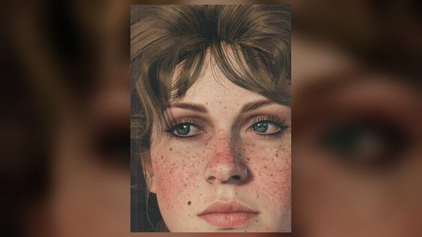
Mary-Beth Gaskill
Sean brings Mary-Beth along on his coach robbery near Face Rock as the decoy, against Arthur's wishes (see Biography).

Catherine Braithwaite
Catherine hires Sean and Arthur to burn the Grays' tobacco fields after a game of cribbage at Braithwaite Manor; Sean's opinion of her and her son is told in the Biography.
Skills, weapons and horses
In camp
Sean's camp events start after "The First Shall Be Last" and stop for good after "Blessed are the Peacemakers", according to the Red Dead Wiki's camp events page. He takes his turn on guard duty, picking up a repeater before his watch, and can be seen whittling wood at Horseshoe Overlook. He is unavailable in camp while "Pouring Forth Oil IV" or "The Fine Joys of Tobacco" is waiting to be played. An Arthur who antagonizes the gang enough can be punched and thrown out of camp by Sean, as by Lenny, Javier, Bill, John or Charles.
He sings at the poker table and at the campfire, often with Pearson on the accordion or Javier on the guitar, sometimes with Uncle, Karen and Susan. The Red Dead Wiki lists "Home, Dearie, Home", "Rinky Dinky Di Lo", "Keyhole in the Door", "A Yankee Ship", "Blow the Man Down" and "John Brown (Glory, Glory Hallelujah)" outside the party, and "The Louisville Maid", "Wild Free Rover", "Ring Dang Doo" and "Rye Whiskey" during the party for his return, at the end of which he sits alone by the fire singing "The Sprig of Shillelagh". According to the camp events page, Arthur does not know the words of the poker-table songs, but he can join in with "Blow the Man Down" and "John Brown" at the campfire.
Jobs and companion activities
In the Clemens Point chapter Sean offers Arthur two companion activities, a raid on Lonnie's Shack and a coach robbery near Face Rock (see Biography; rewards and conditions under Missions). On jobs his shooting is uneven: Arthur outshoots him at the bottles in "Pouring Forth Oil IV", while the Red Dead Wiki's tips for "The Fine Joys of Tobacco" note his high accuracy during the escape.
Weapons and horse
Like most gang members, Sean has a custom sidearm: according to the Red Dead Wiki, a Cattleman Revolver in blued steel with a nickel frame. The wiki also lists a Rolling Block Rifle, a Double-Barreled Shotgun, a Carbine Repeater, a Lancaster Repeater, a Bolt Action Rifle and a knife; the handle of the knife is engraved with the year 1848. His horse is Ennis, an American Standardbred (Silver Tail Buckskin, according to the wiki's gallery), whose name is also that of the county town of County Clare, in Ireland.
Missions
The English Red Dead Wiki lists four story missions of Red Dead Redemption 2 for Sean, from his rescue to his death, plus two companion activities, and seven types of Red Dead Online free roam missions together with the Blood Money missions. The table below also includes the missions in which he is only talked about, which tell what the gang knows of him while he is missing and after his death.
Red Dead Redemption 2, story missions
| Mission | Chapter | Sean's role |
|---|---|---|
| Outlaws from the West | 1. Colter | Mentioned. Dutch counts him among the missing after Blackwater, and tells Micah they do not know what became of him or of Mac Callander. |
| Enter, Pursued by a Memory | 1. Colter | Mentioned. Javier tells Arthur that nobody knows what happened to him on the ferry job. |
| Old Friends | 1. Colter | Mentioned. Dutch says he knows that John, Mac, Charles and Sean will all be back. |
| Americans at Rest | 2. Horseshoe Overlook | Mentioned. Trelawny reports that bounty hunters hold him in Blackwater and may move him. |
| Exit, Pursued by a Bruised Ego | 2. Horseshoe Overlook | Mentioned, in optional dialogue. Before the rescue, Arthur tells Hosea he must go and see about Sean; after it, Hosea notes how much Sean has enjoyed his return. |
| The First Shall Be Last | 2. Horseshoe Overlook | Rescued. Arthur, Javier, Charles and Trelawny follow Ike Skelding's men up the Upper Montana River and free him from a tree in their camp. The gang celebrates his return that night. |
| Who is Not Without Sin | 2. Horseshoe Overlook | At camp. He is one of the gang members who comment as Arthur carries a drunk Reverend Swanson to his tent. |
| Pouring Forth Oil IV | 2. Horseshoe Overlook | Invites himself onto the train robbery with Arthur, John and Charles. He searches for the baggage car, is knocked down by a guard, keeps watch while Arthur loots it, and escapes with about 100 dollars. |
| A Strange Kindness | 2. Horseshoe Overlook | Listed by the French Red Dead Wiki only; the mission page does not mention him. |
| The New South | 3. Clemens Point | Mentioned. Dutch says that the gang would not have got Sean back without Trelawny. |
| The Fine Joys of Tobacco | 3. Clemens Point | Plays cribbage at Braithwaite Manor, then drives the moonshine wagon into Caliga Hall with Arthur hidden in the back. He distracts the guard Hamish, douses the barn and finds the payroll during the escape. |
| A Short Walk in a Pretty Town | 3. Clemens Point | Killed. Walking down the main street of Rhodes with Arthur, Bill and Micah, he is shot in the head by a sniper hired by the Grays. He does not appear in the story after this. |
| The Battle of Shady Belle | 3. Clemens Point | Mentioned. On the ride, John lists him among those the gang has lost; at the end, Dutch says that losing Sean has changed his outlook. |
Red Dead Redemption 2: companion activities
| Activity | Chapter | Sean's role |
|---|---|---|
| Social Calls With Mr. MacGuire | 3. Clemens Point | Activity giver. He takes Arthur to Lonnie's Shack, in Scarlett Meadows, to rob a gang of drunk train robbers. Reward: 20.50 dollars. |
| Coach Robbery (Sean MacGuire) | 3. Clemens Point | Activity giver. With Mary-Beth as a decoy, he and Arthur rob a Boles Overland banking coach near Face Rock. Total take: 305 dollars, of which the player receives 55. Available after "Friends in Very Low Places", from noon, until "Blessed are the Peacemakers". |
Notable people Sean kills
The Red Dead Wiki lists a single notable killing for Sean, the Gray guard Hamish, and marks it as determinant. The table adds the two coach men that the Coach Robbery page credits to either Arthur or Sean. The bounty hunters, train guards, lawmen and Gray gunmen killed in gunfights alongside Arthur are not listed one by one.
| Name | Mission | Circumstances |
|---|---|---|
| Hamish | The Fine Joys of Tobacco | Determinant. The Caliga Hall guard who rides with Sean to the warehouse is killed silently by Sean or by Arthur, unless Arthur knocks him out with his pistol. |
| Laurence, coach driver | Coach Robbery (Sean MacGuire) | Determinant. Killed by Arthur or by Sean when they open fire on the escort. |
| Harry, co-driver | Coach Robbery (Sean MacGuire) | Determinant. Killed by Arthur or by Sean in the same ambush. |
Quotes
The lines below are given as spoken in the game, in the original English, with the mission and the person addressed.
The rescue
You know... you're a lot less ugly from that other angle, Arthur.
The First Shall Be Last (RDR2, chapter 2), to Arthur, once cut down from the treeDo I get a hug, Arthur? A warm embrace for a lost brother, now found?
The First Shall Be Last (RDR2, chapter 2), to Arthur, who helps him to his feetLook who it is. I missed that crazy bastard.
Who is Not Without Sin (RDR2, chapter 2), as Arthur carries a drunk Reverend Swanson through camp
The train robbery
Me and the big cheeses, love it. Can't wait to slit some bastard's throat.
Pouring Forth Oil IV (RDR2, chapter 2), climbing onto the wagon after John tells him he was not invitedIt's do or die with you... I like it.
Pouring Forth Oil IV (RDR2, chapter 2), to Arthur, who climbs onto the oil wagon to stop the trainAre those tennis rackets in there? Posh bastards.
Pouring Forth Oil IV (RDR2, chapter 2), keeping watch while Arthur loots the baggage carWhoa! That was fun, boys, real fun! I can see why they call you professionals of the outfit.
Pouring Forth Oil IV (RDR2, chapter 2), after the escape from the lawmen
Clemens Point
I'm rebel stock, boy... I was born burning down manor houses.
The Fine Joys of Tobacco (RDR2, chapter 3), to Arthur, who answers: "Well, burn quietly." (quote box of the mission page)Now it don't feel right? I could'a told you that-
A Short Walk in a Pretty Town (RDR2, chapter 3), his last words, cut short by the sniper's bullet (quote box of the mission page)
Development and performance
Casting
Sean is played by Michael "Mick" Mellamphy, who provides both his voice and his motion capture. Mellamphy is an actor from County Cork, in Ireland, based in New York: Eurogamer called him a "Cork man" in November 2018, and the Irish Stew podcast introduces him as a native of Cork. He is a company member of the Irish Repertory Theatre in New York and the artistic director of Origin Theatre Company, and his television credits include I Know This Much Is True, Law & Order, Law & Order: SVU and The Good Wife, according to the Irish Echo, which honored him at its 2023 Arts & Culture Awards. The Echo credits him as Sean in both Red Dead Redemption 2 and Red Dead Online.
Mellamphy was not the first actor cast as Sean: Wikipedia's list of the game's characters, citing a cast panel held at SacAnime in Sacramento on 8 June 2019, says he replaced another actor later in production. According to the same list, which draws on an August 2019 episode of The Interesting Podcast, he worked on the game for three years, during which the character developed significantly. At the original audition he thought he was being asked to play a member of the Irish Republican Army, and for a while he did not know that Sean belonged to the Van der Linde gang. He learned the character's fate about halfway through production, while recording audio, and described Sean as the player's "little brother".
The 2021 panel
In January 2021 Mellamphy, Roger Clark (Arthur) and Penny O'Brien (Molly O'Shea) took part in "Irish Redemption: An Irish Invasion of Video Games", an online panel of Origin Theatre's 1st Irish Festival first shown on 15 January. TheGamer reported on it on 20 January 2021, in an article by Cian Maher. Mellamphy recalled having a beer with the cast while still unsure whether Sean was part of the gang, and being told by Benjamin Byron Davis, who plays Dutch: "Mick, my man. Sean's part of the gang." On the character's accent, he said: "There was just something very Dublin about [Sean] - working class, a bit of fun."
He also told the panel that the party for Sean's return was one of his favorite things in the game, yet as a player he missed it: he took Arthur hunting, came back to camp the next morning to find everyone hungover, and so skipped the two or three months of work he had spent on the scene singing songs and with Karen in the tent.
Cut content
According to the Red Dead Wiki, the files of Red Dead Redemption 2 contain an unused hat texture for Sean, two unused vests, a robbery outfit and a wound model. The wiki's page on Sean describes that outfit as a black leather duster with visible stitching, of the kind the gang wears on robberies. Drinking with Sean is among the activities with gang members that were cut or reduced, and a piece of concept art shows him with Trelawny, Sadie, Lenny and Micah.
Reception
Reviews and rankings
In IGN's review of 25 October 2018, Luke Reilly said the gang's members came from many cultures, "from Irish thug Sean Macguire to Native American brawler Charles Smith", and that "they all feel like credible human beings and not caricatures." In Game Informer's staff ranking of the 24 gang members, published on 27 December 2018, Sean comes 12th. The staff called him "the life of the party" and "a proud Irish immigrant" who mocks his companions in colorful language, and described his death as "the first truly shocking moment in the story", the one that sends the gang's decline into overdrive.
Eurogamer: an Irish character
On 16 November 2018 Eurogamer published a feature by Cian Maher, a writer from Dublin, titled "Why Red Dead Redemption 2's Sean MacGuire is the best Irish character in a video game yet". Maher wrote that Sean speaks with a genuine inner-city Dublin accent and that he is "a Dub, born and bred". He set him against earlier Irish characters: Cait in Fallout 4, an alcoholic with an accent from no real region of Ireland in his view; Sean Devlin in The Saboteur, whose greetings he called a cliché nobody in Ireland uses; Moira in Overwatch, "a little better" but with an accent he did not find to be Dublin's; the McReary family in Grand Theft Auto IV; and the character called Irish in Red Dead Redemption, whom he described as "just another stereotypical whiskey-drinking idiot".
Maher also placed an Irishman in 1899 America in his historical context, recalling that the Great Famine drove some 1.5 million people from Ireland between 1845 and 1855, 250,000 of them in 1847 alone. He contrasted Sean's behavior at his homecoming party with the solitary drinkers of other games, and concluded that Sean is "a video game character who's actually Irish".
Other media and legacy
Red Dead Online
Sean is one of four members of the Van der Linde gang who appear in Red Dead Online, set in 1898, a year before the story; the others are Sadie Adler, Josiah Trelawny and Joe. He is a stranger who gives missions. The player first meets him in the cabin at Tanner's Reach, in the Tall Trees of West Elizabeth. He draws his revolver on the player, calms down, explains that he has been separated from his group, and gives a tip on a stagecoach passing nearby. In the animation of this first meeting he cocks the hammer of his revolver, but the hammer does not move.
Afterwards he can be found in the cabin or at his camp near Quaker's Cove, southwest of Blackwater. He offers seven types of free roam missions: Bushwhack, Destroy Supplies, Paid Killing, On The Hunt, Jailbreak, Early Execution and Horse Theft. His jobs lower the player's honor. With the Blood Money update, released on July 13, 2021, he becomes one of the four strangers who give Blood Money missions, with Anthony Foreman, James Langton and Joe. In this update Guido Martelli, in Saint Denis, sends the player after Capitale, a means of exchange used by the Bronte family for its most discreet business.
Marketing
On September 6, 2018, Rockstar posted Sean's portrait and character description on Twitter, under the spelling "Sean Macguire", in a series covering the members of the gang; The Hollywood Reporter reproduced the series the next day. Rockstar also released official artwork of him for Red Dead Redemption 2. In the composite image of the 23 gang members, Sean stands in the front row, between Swanson and Tilly.
Trivia
- Sean is the first member of the gang whose death is shown on screen, if Davey Callander, who dies as soon as he is introduced, is set aside.
- In "The First Shall Be Last", the cutscene in which Arthur frees Sean changes slightly depending on whether the player cuts the rope or shoots it. Shooting the rope is a gold medal objective.
- Micah misses the party for Sean's return: his own return mission, "An American Pastoral Scene", cannot unlock before it, even if Arthur has already freed him from Strawberry.
- In the first cutscene of "Pouring Forth Oil IV", Sean reloads his Cattleman Revolver by swinging the cylinder out to the side, which that single-action design does not allow. It is the only time he reloads it this way; before and after the cutscene, he loads it through the gate.
- If Arthur is the one who kills Hamish in "The Fine Joys of Tobacco", the following cutscene still shows the body outside with a knife wound, the outcome in which Sean kills him.
- According to the Red Dead Wiki, "Social Calls With Mr. MacGuire" is the only companion activity with its own title, apart from "High and Low Finance", and the only one with its own music. Sean is also the only character who gives two companion activities in the same chapter.
- In "Social Calls With Mr. MacGuire", the man standing outside Lonnie's Shack takes Arthur for Sean's father. If Arthur has already robbed the house on his own, he remarks that he had not realized this was the place Sean meant.
- In his "Coach Robbery", Sean asks to take the first shot and is annoyed if Arthur kills the first guards. A guard can take Mary-Beth hostage if the player is too slow.
- At the start of "A Short Walk in a Pretty Town", Bill's and Micah's horses are tied up in Rhodes, but Sean's horse, Ennis, is not there. Ennis is not seen again.
- The mission fails if the player kills Sean before his scripted death in "A Short Walk in a Pretty Town". A Double-Barreled Shotgun can be taken from his body.
- His grave north of Clemens Point is one of those that count toward the Paying Respects trophy.
Gallery
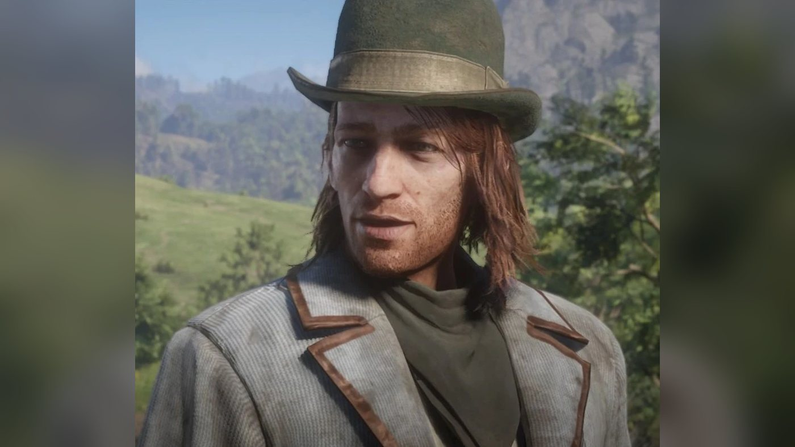
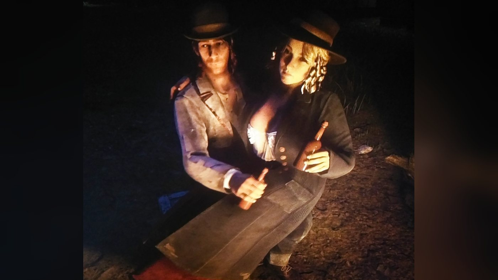
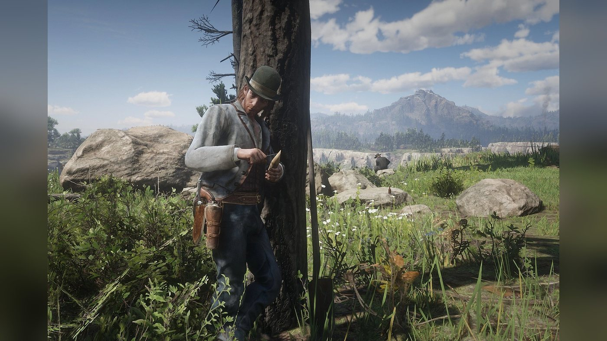
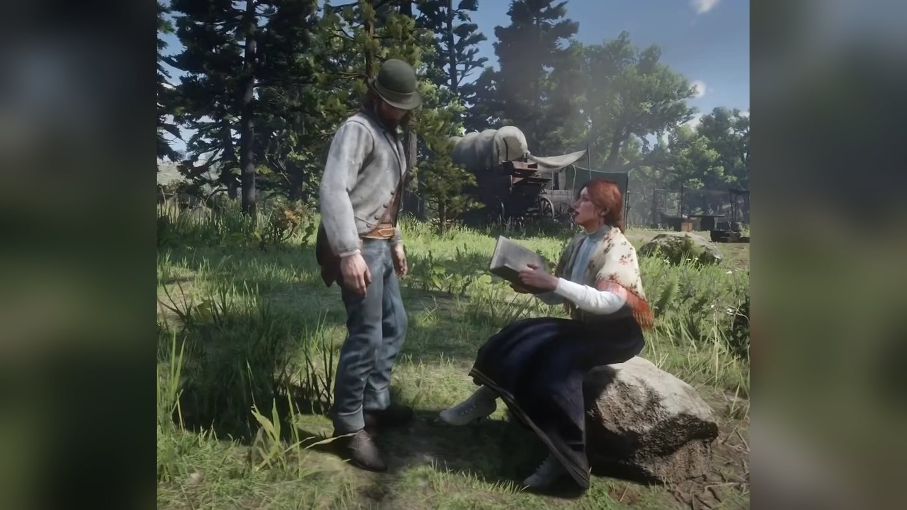
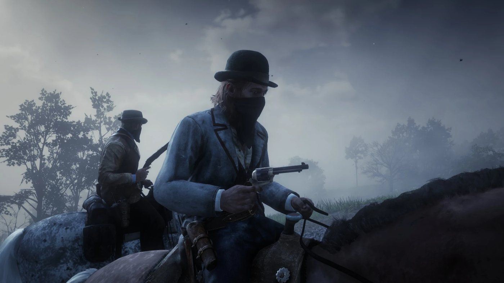
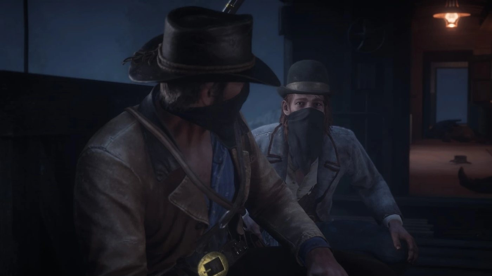
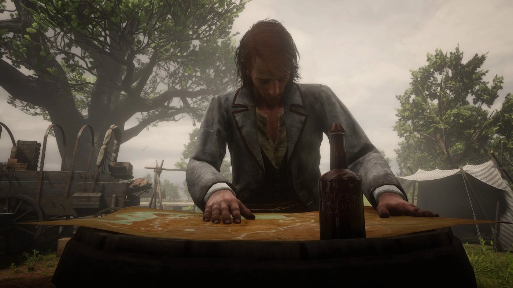
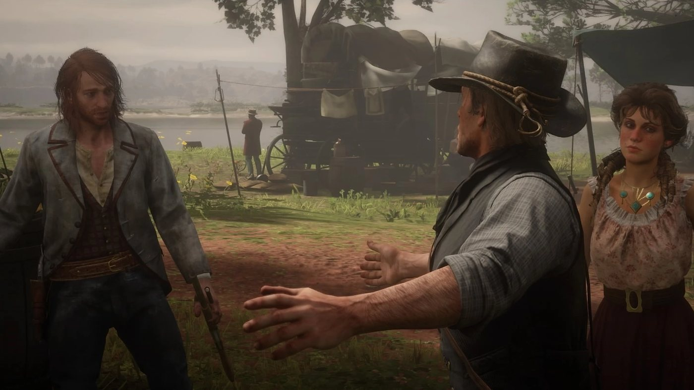
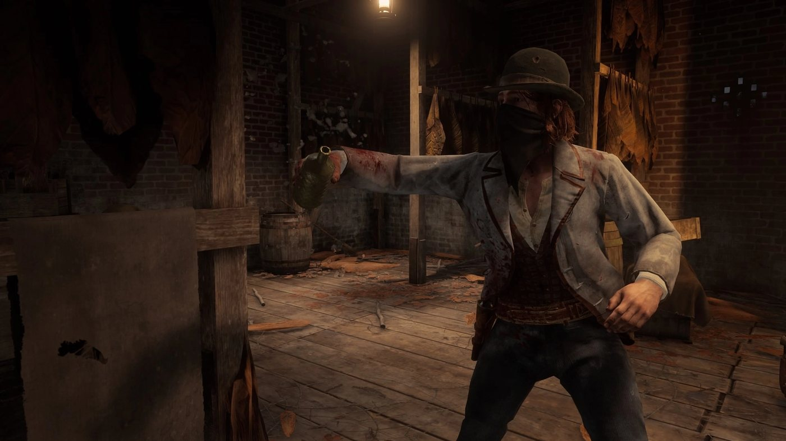
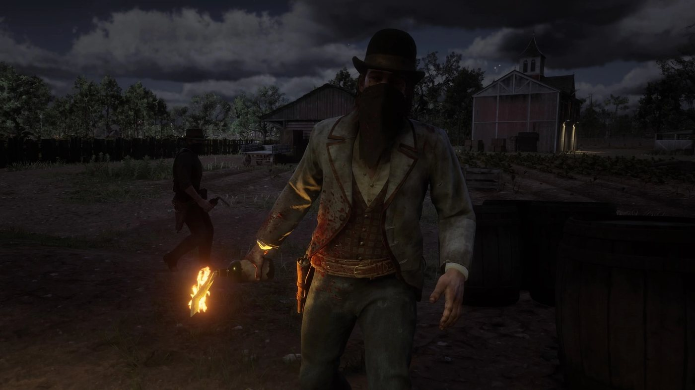
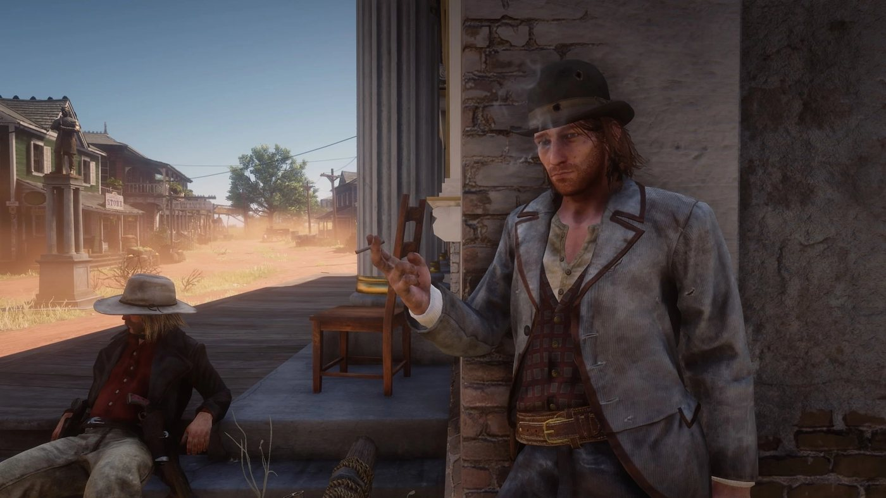
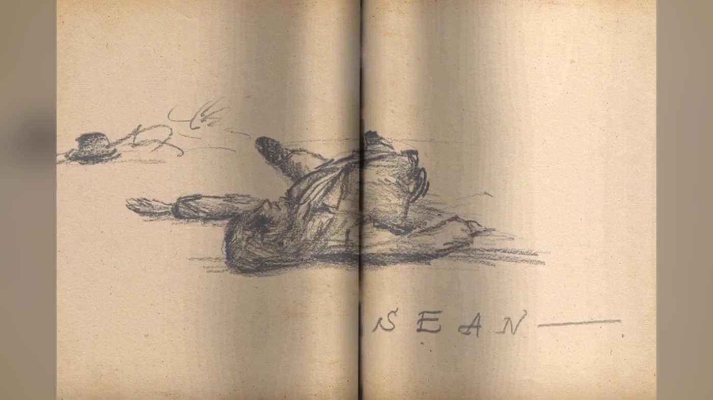
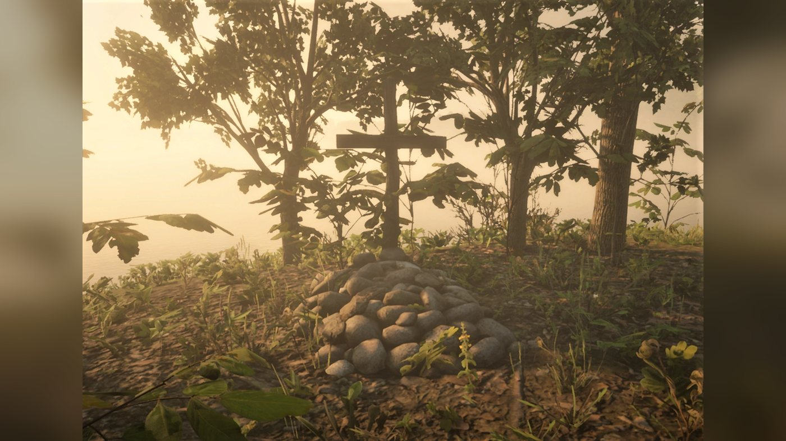
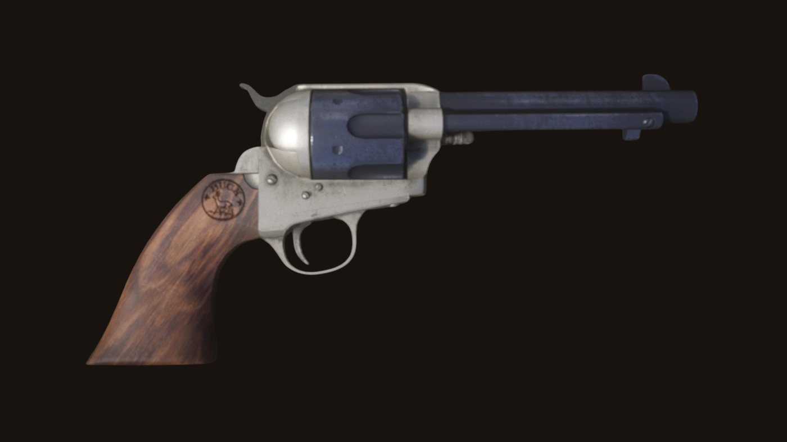
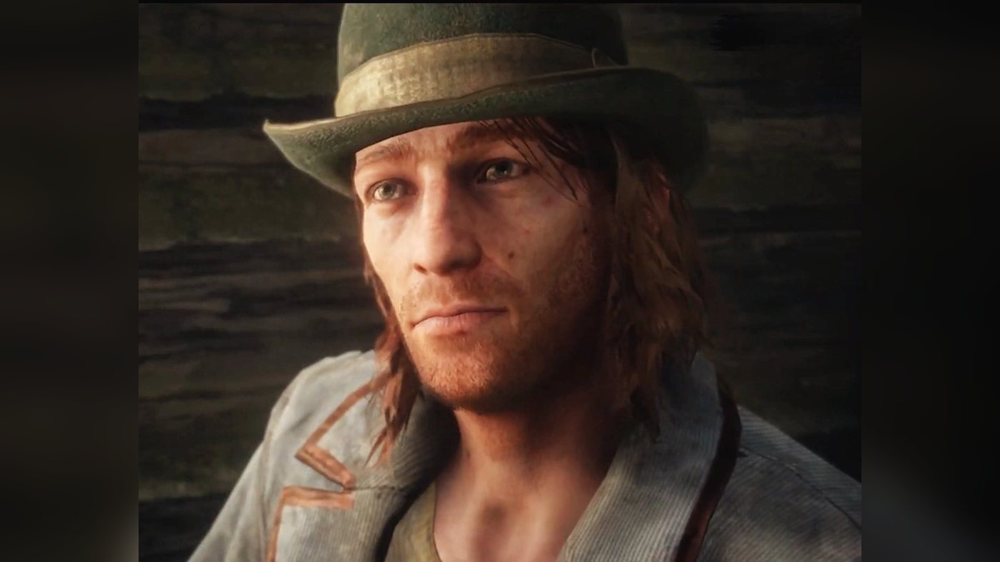
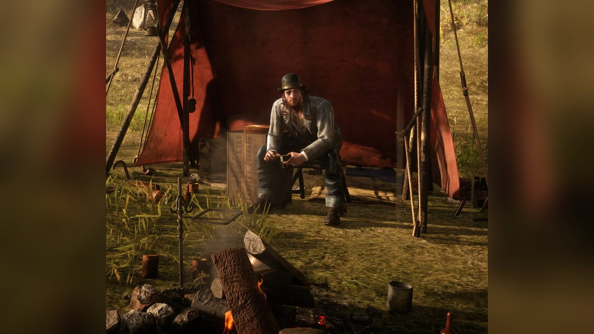